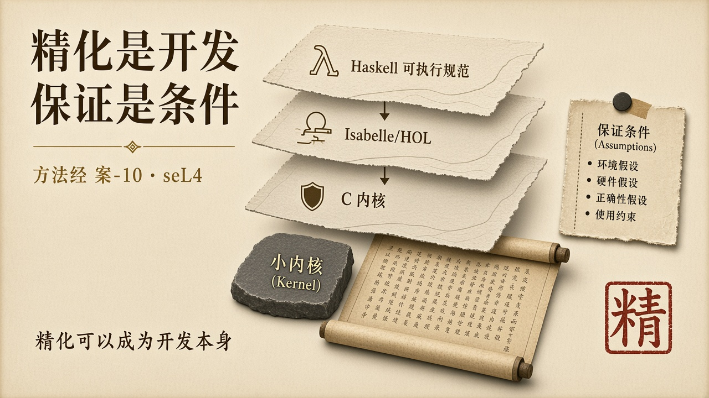
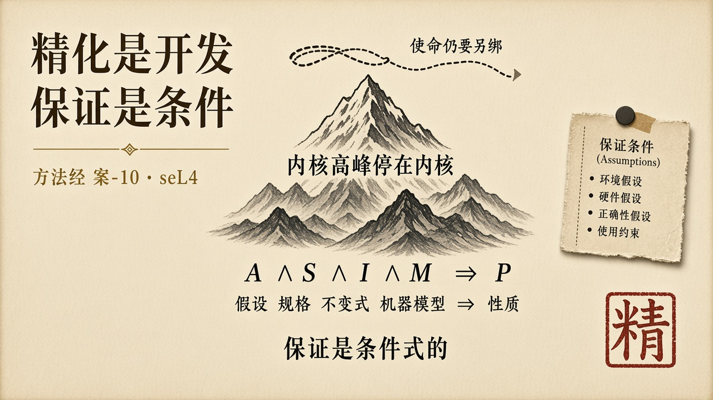

经过
seL4 是被形式化验证的微内核。内核约有 8,700 行 C 代码和 600 行汇编。C 实现之前，团队先用 Haskell 写成约 5,700 行的可执行规范，作为中间层自动译入 Isabelle/HOL；高性能的 C 是手工写出的，不是从 Haskell 生成的。证明脚本约 20 万行，中间定理超过 1 万条。小内核、大证明，是同一件事的两面。它的方法不是先写出 C 代码，再请证明团队事后补一份正确性论证。精化是开发本身：从抽象规范，经可执行规范，到 C 实现，每一步都要求后一层表现前一层。证明与代码一起生长。这把「验证」从项目末尾的质量活动，改写成与实现同一条绳子上的工作。
证明是条件式的。内核正确性结论可以写成：在假设 A、规格 S、不变式 I、机器模型 M 同时成立时，性质 P 成立。少写任何一截，P 都不自动成立。官方列明：编译器、汇编、硬件、引导、DMA、时序信道等在假设里。用户态程序不在证明里。设备驱动若不在内核、又未被同样约束，就不在那条绳子上。硬件若走出机器模型，证明不负责。条件式不是缺陷。条件式是诚实。把条件式说成「已经全面正确」，才是假使命。官方说得干脆：即使运行 seL4，也不会自动意味着整个系统安全。已验证的内核 ≠ 已验证的系统。
2026 年 7 月 22 日发布的 seL4 16.0.0，修复了已验证 AArch32 配置上缓存维护路径的一处内核崩溃。那一次失败没有推翻证明。「已验证内核出了问题」与「形式证明写错了」，是两个命题。它指出机器模型与真实硬件之间的缝，指出假设 M 的边界。高峰停在被写下的假设里。假设之外，仍是工程。把漏洞写成「形式化无用」，是把条件式保证误读成无条件担保。
它还示范另一件更少被写成标语的事：证明的对象必须足够小，边界必须足够硬。微内核把机制留在内核，把策略推出内核。TCB 被刻意切薄。切薄不是为了漂亮，是为了让 A、S、I、M 能够被写全、被检查、被在变更时重开。庞大的单体也可以声称「我们也证明」。证明若不能跟着横切变更重新打开，声称是海报。

剖析
定义上，seL4 把「内核不得破坏隔离」写成可被证明的性质，而不是写成设计原则。禁区进入规格。能力（系统调用、调度、IPC）被放在禁区之后。这是定义这一步在高保证实践里真正做成了的部分。它没有把「运行于 seL4 之上的使命」一起定义。内核正确，不等于飞机、医院、清算已经绑住目的。下层高峰不自动成为上层绳子。
对齐上，精化链就是对齐的工业形态：规范、可执行规范、C 代码、机器模型，被要求是同一件事的不同高度。这比三张检查单硬得多。它仍可能在假设处不对齐——规范写的不是托付，机器模型不是这块硅，用户态已经把红许可证做成服务。对齐在内核里成立，托付可以在内核之上失败。
达成上，发布一个被证明的内核版本，不是达成一次具体托付。达成仍要问：这一次运行、这一次配置、这一次用户态、这一次硬件，是否仍在 A ∧ S ∧ I ∧ M 里。16.0.0 的缓存问题是达成这一问的实例。版本号绿灯，不等于这一块芯片上的这一次启动仍在模型里。
人的位置被方法改写。立法进入规格。划界进入内核与用户态的切分，进入假设清单。审判进入证明检查器与后续的漏洞披露。独立验证者存在：证明对象、证明工具、可被第三方重跑的脚本，使「因为我们说正确」不够用。这是角色这一条真正出现的地方。它仍不是学科。一套被维护的证明，不等于一门可以开课、失败可以积累、职业可以认证的学。
对使命软件工程的借鉴不是「去把所有软件写成 seL4」。借鉴是：精化可以成为开发；保证必须把假设写成第一类对象；TCB 必须切到可被证明的厚度；横切变更必须重开证明。少了任何一条，抄内核广告没有用。
